AFOLU Agriculture Forestry and Other Land Uses BAU Business as Usual
BUR Biennial Update Report
CBD Convention on Biodiversity
CO2 Carbon dioxide
CH4 Methane
DoE Department of Environment
EU European Union
FYIDP Five Year Indicative Development Plan FWA Forest and Wildlife Authority
GEF Global Environment Facility
GHG Greenhouse Gas
HIV Human Immunodeficiency Virus
IADP Integrated Agricultural Development Program
ICTU Information to facilitate Clarity Transparency and Understanding IHE Institute of Higher Education
INC Initial National Communication
IPCC Inter-Governmental Panel on Climate Change IPPU Industrial Processes and Product Use
I-PRSP Interim Poverty Reduction Strategy Paper IT Information Technology
IWRMP Integrated Water Resources Management Plan JICA Japanese International Cooperation Agency LDN Land Degradation Neutrality
KtCO2e Kilo-ton of Carbon dioxide equivalent LUCF Land Use Changes and Forestry M&E Monitoring and Evaluation
MDG Millennium Development Goals
MIHAP Minimum Integrated Household Agricultural Package MoA Ministry of Agriculture
MoE Ministry of Education
MoEM Ministry of Energy and Mining
MoH Ministry of Health
MoLG Ministry of Local Government
MoLWE Ministry of Land, Water and Environment MoMR Ministry of Marine Resources
MoFND Ministry of Finance and National Development MoFND Ministry of Finance and National Development MoTC Ministry of Transport and Communication MoTI Ministry of Trade and Industry
MRV Measuring, Reporting and Verification
NEAPG National Environmental Assessment Procedures & Guidelines NHCP National Health Care Policy
NAP National Action Plan
NAPA National Adaptation Programme of Action NAPHS National Action Plan for Health Security NBSAP National Biodiversity Strategy and Action Plan NDC Nationally Determined Contributions
N2O Nitrous Oxide
NUEW National Union of Eritrean Women SDG Sustainable Development Goals
SME Small and Medium Enterprise
SNC Second National Communication
SPFP Small and Productive Farm Plot
TB Tuberculosis
TNC Third National Communications
TOR Terms of Reference
UNFCCC United Nations Framework Convention on Climate Change UN United Nations
USD United States Dollar
VMS Volcanic Massive Sulphides
WHO World Health Organization
WRD Water Resource Department
Global climate change, induced by excessive greenhouse gases’ concentration in the atmosphere, represents one of the profound challenges facing mankind in our times. To the extent this ominous challenge is anthropogenic and global in kind, its solution will depend on an earnest and responsible commitment of the international community to cooperate in drastic reduction of greenhouse emissions.
Eritrea’s contribution to global greenhouse emission is insignificant. Yet, due to its geographic location and low adaptive capacity, it is among the countries most impacted by the changing global climate systems. Various manifestations of impacts of climate change, commonly conspicuous in Eritrea, have been undermining its sustainable development efforts.
The Third Nationally Determined Contribution (NDC 3.0) that Eritrea hereby communicates is an updated product of extensive collaborative consultations between and active engagement of numerous government ministries, regional administrations, research institutions and technical experts. As a declaration of national commitment to highly ambitious climate actions, the NDC 3.0 takes into account Eritrea’s local context and development needs and priorities. It lays down a clear guideline for the execution of the climate action commitment to include adaptation and mitigation measures involving nature based options, infrastructural, institutional and behavioral changes that are relevant responses to adjust to actual and contribute to mitigate anticipated climatic stimuli and attendant impacts.
The NDC 3.0 document indicates that Eritrea will pursue a two pronged approach to implement its ambitious climate action. Using resources within its means, Eritrea unconditionally commits itself to reduce its greenhouse gas emissions by 8.6% below business as usual scenario by 2030. Furthermore, the country aims at a more ambitious target of 24.4% emission reduction, predicated on availability of necessary financing through bilateral and multilateral climate finance under concessional terms and grant, as well as technology transfer and capacity building supports. The conditional target is not just about numbers. It is a blueprint for a transformative shift in our energy sector and sustainable development, use and management of our natural resources with promising and significant co-benefits for public health, environmental restoration, community climate resilience and sustainable livelihoods. In this regard, Eritrea’s NDC 3.0 is a response to the international call for cooperation to build a better and safe future for all.
Tesfai Ghebreselassie Sebhatu
Minister of Land, Water and Environment
Eritrea is located in the Horn of Africa between 12022’ and 18002’ north and 36026’ and 43013’ east. The country occupies a geopolitically significant location because of its coastline along the strategic Red Sea. It covers an area of 124,320km2 with elevation ranging from below sea level in the southern arid region to over 3000m in the Eastern Highlands. The country’s economy is based on the extraction of natural resources such as agriculture, fishery and mining. Agriculture is the main source of income and food security for the great majority of the population. The country has also the potential to harvest a large number of fish annually. Eritrea’s pristine marine waters, and numerous historical sites and pleasant weather conditions are the basis for a dynamic tourism industry. In addition, the country’s relative proximity to the major tourist markets in Europe and the Middle East combined with Eritrea’s peace and security present the possibility for further developing the tourism sector. In recent years, mining (copper, gold, zinc, silica, marble, granite, and potash) has emerged as an increasingly significant sector, which now accounts for the vast majority of exports and foreign direct investment (VNR, 2022). Eritrea’s geo-strategic location, positioned along one of the world’s most important international maritime shipping routes, also offers immense opportunities to become a major transhipment hub.
Eritrea, like many other developing countries, is increasingly experiencing the adverse impacts of climate changes. Variations in temperature and precipitation are key drivers of climate-related disasters that have negatively affected the country’s economy and livelihood systems. To ameliorate the situation, the Government of the State of Eritrea has committed itself to take part in adapting and mitigating effects of climate changes. At the 21st Conference of the Parties (COP21) in 2015, the Parties to the United Nations Framework Convention on Climate Change (UNFCCC) adopted the Paris Agreement (PA). This is the first global legal framework binding the responsibilities of all Parties for joint efforts to combat climate change. As a member state to the Paris Agreement, Eritrea has taken the necessary actions to fulfil its commitments under the Nationally Determined Contribution (NDC), which guides the country’s climate actions in raising resilience and achieving the goals for sustainable development. The contributions described in this document are built upon Eritrea’s existing NDC, new policies and national plans, which provide the basis for developing quantifiable mitigation and adaptation targets. The Ministry of Land, Water and Environment (MoLWE), as a focal point for climate change, has, in cooperation with the relevant sector institutions, led the updating process.
The third generation NDC ( NDC3.0) encompasses both unconditional and conditional measures for the reduction of GHG emissions and adaptations. The mitigation component identifies measures for the period 2025-2030 in the following sectors: Energy, IPPU, AFOLU and waste, while the adaptation component identifies measures for sectors including Agriculture, Forestry, Marine, Water and Health sectors. The adaptation component identifies measures in key sectors in order to improve adaptive capacity, enhance resilience, and reduce risks caused by climate change, thus contributes to the achievement of the country’s Sustainable Development Goals (SDGs) and National Development Plan objectives. Eritrea is capable of implementing the unconditional contribution relying on its resources, while the conditional contribution is one that the country would undertake if international means of support is provided.
Based on analysis conducted, emissions are increasing under the BAU projection from 3810 ktCO2eq in the base year of 2018 to around 5023 ktCO2eq (increased by 31.7percent) in 2030. With unconditional mitigation measures in 2030 emissions are expected to be around 4591 ktCO2eq, representing a reduction of around 8.6percent against BAU. Similarly, with conditional mitigation scenario, emissions are expected to be around 3798 ktCO2eq, which corresponds to 24.4percent reduction by 2030 against the same baseline.
Eritrea’s adaptation contribution prioritizes adaptation interventions and adaptation targets on sector- level totalling 35. The country anticipates that the NDC3.0 will play a key role in achieving the long- term national development objectives for the country and the global sustainable development goals. In addition, the document will serve as a blueprint for transitioning into a climate-resilient low carbon economy that will accelerate development efforts without sacrificing the quality of the environment and its resources. Agriculture is the most vulnerable sector to the effects of climate change as it is highly dependent on the natural system. Thus, drought, epidemic pests, diseases and parasitic weeds are the major threats that hamper crop and livestock production (TNC, 2021). The marine resources sector is also highly vulnerable to climate change impacts as both marine and inland fisheries are adversely affected. Across the communities, women, children, elders and people living with disability are the most vulnerable.
In order to fully implement the mitigation and adaptation measures, Eritrea will require finance, capacity building and technology transfer. The financial resources needed to implement mitigation and adaptation contribution is expected to be mobilized mainly from the Government of the State of Eritrea and international organizations. The total cost for Eritrea’s identified NDC3.0 mitigation measures through 2030 is estimated at around 500,793,000USD, and 777,989,753.29 USD for adaptation priorities, representing a combined funding requirement of around 1.3 billion USD. For both mitigation and adaptation combined, unconditional measures account for around 36.59percent, while the funding requirements for conditional measures are 63.41percent.
Eritrea’s NDC3.0 demonstrates its commitment to increase climate action which sets ambitious mitigation and adaptation targets for 2025-2030. This NDC3.0 is build based on first NDC and other national reports like First Biennial Update Report (BUR1) and Third National Communication (TNC) reports. The NDC3.0 is aimed at improving data reliability create workable strategies, strengthen national implementation mechanisms.
Eritrea is highly vulnerable to climate change impacts like drought and floods. Its economy and population are heavily dependent on climate sensitive sectors like rain-fed agriculture and livestock, which supports of the predominantly rural and young population. The NDC3.0 is designed to be aligned with national sectorial strategies and global sustainable Goals, promoting climate resilient economic development while protecting its people and natural environment from climate change.
The key environmental challenges in Eritrea include climate impacts, land degradation, biodiversity loss, and socio-economic. Despite these challenges, Eritrea has a robust policy framework aligned with international agreements and is actively implementing adaptation programmes. These include community led massive afforestation and reforestation, soil and water conservation projects, the construction of micro and surface dams, and agricultural packages (Like MIHAP and SPFP) designed to build resilience for vulnerable households. Eritrea’s significant potential in solar energy and its underexploited marine resources are highlighted as opportunities for sustainable, low emission development. The key issues of National Circumstance relevant to climate change are explained here.
Category |
Descriptions |
National Context |
Eritrea is vulnerable to climate change, experiencing extreme weather events like drought, floods, epidemic pests, diseases and parasitic weeds, water scarcity, heat stress, coral bleaching in the Red-Sea and sea-level rise. |
Population |
|
Geography |
|
Economy |
Based on natural resources
|
Climate profile |
|
Policy and Legal Frameworks |
Eritrea is party to key international agreements (UNFCCC, Paris Agreement and Kyoto protocol, CBD, UNCCD etc.) Key national policies and strategies which Eritrea has prepared include: Land Degradation Neutrality (LDN) target, National Biodiversity Strategy and Action Plan (NBSAP-2015), NDC-2018, National Adaptation Program of Action (NAPA-2007), Eritrea Coastal Area Management (ICAM-2007), National Action Program (NAP) to combat desertification, Water policy and proclamations (2010) and National Health Care Policy (NHCP) and National Health Care West Management Policy (2010) National Development Planning Framework and Five Year Indicative Development Plan (2009-2013) various proclamations on Environment, Fisheries and plastic bans. Some of the National Legal and Regulatory instruments include: National Environmental Management Plan For Eritrea (NEMP-E, 1995), National Environmental Assessment Procedures and Guidelines (NEAPG-1999), Eritrean Environmental Protection, Rehabilitation and Management Framework (127/2017), National Aquaculture Development Strategy and the Eritrean Aquaculture Products Regulation, Forest and Wildlife Authority (FWA) Proclamation No 155/2006, Legal Notice No. 176/2014 of the Fishery Proclamation prohibits discharge and deposits of waste or any other polluting matter, legal notices on the ban of importation of single use plastic bags Other related regulations include Legal Notice No. 99/2004; Regulation for Importation, Handling, Use, Storage and Handling and Disposal of Pesticide Legal Notice No. 114/2006;. Environmental Protection and Management Regulations Legal Notice No 127/2017, Directive for the Establishment and Management of Protected Areas MLWE 02/2023 and the Directive for the Management of Waste MLWE 01/2023 |
Socio-economic characteristics |
|
Education |
|
Heath |
|
Socio-economic characteristics |
|
Agriculture |
Key on-going strategies and programs of the sector include:
|
Forestry |
|
Fishery |
|
Energy |
|
Mining |
|
Tourism |
|
Environmental Context |
|
Water resources |
|
Marine environment |
|
The updating process has gone through a series of phases including extensive documentation review, field visits to select environmental projects as well as stakeholders’ consultation. The technical analysis of mitigation component comprises several methodological steps including preparing an updated GHG reduction policy scenario for 2025 - 2030 single target years prioritizing mitigation interventions and determining conditional and unconditional policy actions. The adaptation component is based on a review of the existing documents, the NAP implementation modality and resource mobilization strategy as well as various sector-base vulnerability assessments. A list of actions has been set and prioritized. The required resource for realization of NDC3.0 was estimated and disaggregated into conditional and unconditional scenarios.
The process of updating the NDC3.0 has the following specific objectives.
Revise the major elements of the current NDC (NDC 2018); particularly data and information related to mitigation (e.g. emission reduction potential), and the proposed adaptation goals;
Set and strengthen GHG targets
Find ways of aligning NDC3.0 document with the existing national development policies and strategies; and
Identify the needs for finance, capacity building, technology transfer; and gender mainstreaming
As stipulated in the Terms of Reference (ToR), the revised NDC3.0 will include the same sectors and same types of gases as the 2018 NDC. Hence, all the six administrative regions of the country ( Maekel, Debub, Anseba, Gash Barka , Semenawi Keih Bahri and Debubawi Keih Bahri ) are included under NDC3.0. The climate change mitigation actions focus mainly on the following four sectors: energy, IPPU, AFOLU and waste management, while the adaptation action comprises the following sectors, namely: agriculture, forestry, marine resources, land and water, and public health. Likewise, gases covered under the current NDC; Carbon Dioxide (CO2), Methane (CH4) and Nitrous oxide (N2O), are also reflected in the updated document because these are primary gases that contribute most to the global warming. The GHG inventory in the updated document would help in understanding the general direction of emission development and the most relevant emission sources supporting an understanding of whether mitigation actions undertaken to date are proving to be effective as well as of the need for action. By reporting transparently, the country also contributes to a better understanding of global GHG emissions and the efforts taken to implement the Convention. At the same time, others may learn from Eritrea’s approaches and experience and be able to identify potential for further improvement
Eritrea’s immediate development priorities have been set to meet the basic needs of the population. Important measures to address development challenges in the country, among others, include the Interim Poverty Reduction Strategy Paper (MoFND, 2004), the Food Security Strategy (FSS), Education Sector Development Program, the National Water Supply Emergency Action Plan and the 2003-2008 national Gender Action Plan, and the National Health Policy. The I-PRSP aims to promote economic growth and development through the following measures: firstly, it creates favourable conditions to achieve sustainable growth; secondly, it attracts investment in high potential growth centres; thirdly, it invests in human resources development with priority to health and education; and fourthly, it expands and modernizes the country’s basic infrastructures.
Eritrea expects that the updated nationally determined contribution will play a fundamental role in achieving the country’s development objectives forming an essential component of the global sustainable development goals. This explains why the NDC3.0 has strongly aligned itself with the various national and sector policies. Although considerable progress has been made in this respect, a lot remains to be accomplished and to reach the desired level of outcome that facilitates the integration of climate change actions into national development policy framework.
This document updates and strengthens the 2018 NDC for the mitigation contributions informed by improved data collection, in-depth analysis and extensive stakeholder engagement. For the mitigation component, detailed sector-and project-based analysis has been undertaken to estimate the country’s mitigation potential and develop quantified conditional and unconditional contributions through 2030. The section below provides a brief description of the revision process of Eritrea’s nationally determined contribution for the mitigation component.
Targets for the updated mitigation measures are based on detailed assessment of the country’s mitigation potentials and actions taken against Business-As-Usual (BAU) scenarios. This has been carried out through a process that incorporates an analysis of Eritrea’s existing sectoral and climate policy framework. Data are gathered through consultation with government officials, experts and stakeholders, field visits to all regions of the country and desk review. The national documents that are reviewed for the development of NDC3.0 are sectorial strategic plans and programs, NDC-2018, BUR1-2021 and TNC-2021 and a variety of other official data and information sources. The tools and models used for the mitigation analysis are GACMO, IPCC 2006 and 5AR of IPCC.
Eritrea’s mitigation contribution is based on a reduction relative to the (BAU) emissions from 2018-2030. The BAU projection represents the scenario according to which mitigation policies and actions are not implemented. It, therefore, provides a baseline against which the emissions reduction potential from mitigation actions has been quantified. Eritrea’s greenhouse gas (GHG) emissions are projected to increase from 3,810 ktCO2eq in 2018 to 5,023 ktCO2eq in 2030 under the BAU Scenario. Figure 1 illustrates the BAU scenario emissions in ktCO2eq for the direct greenhouse gases; and the contribution by each sector in the GHG emission through the selected years. In spite of fluctuations over the years, AFOLU (Agriculture, Forestry and Other Land Uses) followed by energy has been the major contributors. In the agriculture sub-sector, methane emission from enteric fermentation of ruminant animals and manure mismanagement are the main causes for high emission. In addition, energy has caused significant amount of emission as fossil fuel remains to be the main source of energy in the country.
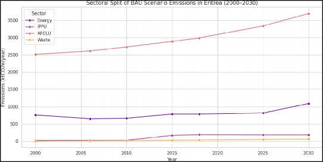
Figure 1 : Sectoral split of BAU scenario emissions (ktCO2e/year)
In GHG emissions mitigation, Eritrea has put forward ambitious out unconditional mitigation actions (Emissions reductions that Eritrea intends to achieve using its own resources) with the potential reduction of 432ktCO2eq and with international support (finance, technology transfer and capacity building), more mitigation measures will be implemented with the potential reduction of 1225 ktCO2eq in 2030.The mitigation reduction potentials by each sector is shown in Table 1 below.
|
Sector |
BAU emission projection |
Unconditional Mitigation Potential |
Conditional Mitigation Potential |
|||
2025 |
2030 |
2025 |
2030 |
2025 |
2030 |
|
AFOLU |
3333 |
3691 |
175 |
229 |
672 |
661 |
Energy |
815 |
1090 |
96 |
191 |
132 |
536 |
IPPU |
185 |
185 |
5 |
9 |
9 |
19 |
Waste |
50 |
57 |
2 |
3 |
8 |
9 |
Total |
4382 |
5023 |
278 |
432 |
821 |
1225 |
Figure 2 shows emission projections for the BAU baseline, and Eritrea’s mitigation contribution for unconditional and conditional scenarios. Emissions are increasing under the BAU projection from 3810ktCO2eq in the base year to around 5023 ktCO2eq, (increased by 31.7percent) in 2030. With unconditional mitigation measures in 2030 emissions are expected to be around 4591 ktCO2eq, representing a reduction of around 8.6percent against BAU. The unconditional commitments are projected to curb emissions growth by 2030 and keeping them above 2018 level. Similarly with conditional mitigation scenario, emissions are expected to be around 3798 ktCO2eq, which will be correspond 24.4percent reduction by 2030 against the same baseline.
With international support (finance, technology transfer and capacity building), Eritrea’s commitment reverse the upward trend, projecting emissions below the 2018 baseline in 2030 and this is represents the most ambitious climate goal.
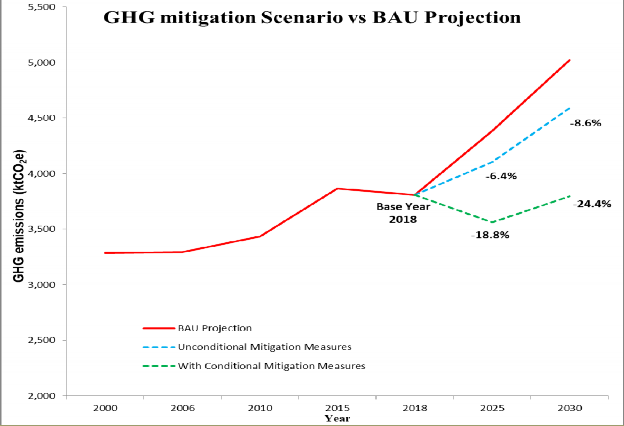
Article 4.2 (a) of the Climate Convention specifies that all parties shall form national policies and consider measures to mitigate the effects of climate changes by limiting anthropogenic emissions of GHG, and by protecting and enhancing GHG sinks and removals. The least developed countries including Eritrea have no specific mandatory targets set for them, but their participatory role is important because these countries strive for economic growth, which eventually may cause higher GHG accumulation in the atmosphere. Apart from meeting the UNFCCC requirements, the GHG mitigation process presents every country with a challenge to achieve economic development in harmony with environmental protection. Hence, Eritrea with the updated NDC3.0, intends to implement a number of prioritized mitigation policies and measures across different sectors including energy (power, transport, household, service and industry), AFOLU (agriculture and forestry), IPPU and waste.
Power, household, service and industry
Eritrea is a net importer of refined petroleum products. The country's energy industries are based mainly on thermal power plants that utilize fossil fuels for electricity generation. The main energy sources are from liquid, gaseous and biomass fuels. Liquid fuels consist of petroleum products, such as diesel, gasoline, heavy fuel oil, Jet-kerosene, Liquefied Petroleum Gas (LPG) and lubricants that were used for combustion and non-energy activities. In Eritrea, the total direct GHG emissions from the energy sector in 2018 were estimated to be 599ktCO2eq and it is expected to increase to 1090 ktCO2eq in 2030. The primary objective of the energy sector policy is to avail ample, dependable and sustainable energy for the growing needs of all sectors in Eritrea at an affordable price. Hence, strategies have been drawn to achieve the following policy objectives:
Minimize dependency on scarce traditional biomass as a source of energy, while switching towards commercial energy;
Reduce energy dependency on imported oil through diversifying sources of energy by promoting the utilization of economically and technically viable renewable energy resources and appropriate conservation measures;
Promote economically viable and environmentally sound energy sector development through the application of appropriate technology of energy production, conservation and usage optimization by ensuring adherence to energy efficiency standards and regulations in both supply and demand side;
Develop human and institutional capacity to a level necessary to sustain and develop an efficient energy sector. The Table 2 below presents the projects to be implemented in order to achieve the above-mentioned objectives.
Table 2 : Summary of Mitigation Measures for the Energy Sector
Mitigation Measures |
Objective |
Duration |
Implementing institution |
Funding Estimates USD |
Indicators |
|||
18-25 |
25-30 |
|
Unconditional |
Conditional |
||||
|
Solar/ diesel mini-grid Rural electrification, 14.25MW Renewable Energy generation and associated distribution system, from this 2.25MW is already installed. |
|
|
|
MoEM and EEC |
1,425,000 |
44,660,000 |
MW installed |
|
|
Solar PVs, large grid Improve grid capacity and connectivity in grid accessible areas, 40MW to feed the national grid and from this 4MW is already installed. |
|
|
|
MoEM and EEC |
7,200,000 |
64,800,000 |
MW installed |
|
|
Connection of isolated grid to central grid Upgrading and or Construction of 66KV Substations and new connections, |
|
|
|
MoEM and EEC |
1,375,000 |
5,500,000 |
MWh saved |
|
|
Efficient electric grid Rehabilitation of old distribution system Saving of 7-8MW (Asmara power distribution system). |
|
|
MoEM and EEC |
50,000,000 |
MWh saved |
|||
|
Efficient wood, charcoal and electric stoves Distribution of energy efficient stoves (electrical and biomass), Reduce at least by 50percent energy consumption. |
|
|
|
MoEM, MoA and NUEW |
1,000,000 |
29,000,000 |
percent Savings |
|
Biogas at rural farms using non-renewable fuel wood |
To promote the adoption of renewable energy systems Reduce biomass consumption subsequently reduce deforestation and have 0.051 ktCO2eq/year reduction. |
|
|
MOA/MoEM |
120,000 |
300,000 |
energy savings (M3) |
|
|
LPG stoves replacing wood stoves Expansion of LPG Storage & Distribution facilities to rural areas, Increase access to efficient fuel |
|
|
|
MoEM |
8,000,000 |
10,000,000 |
Number of LPG stoves and cylinders |
|
|
Solar Street Lights Replacement of mercury and sodium-vapour lamps by solar street lights throughout the country. |
|
|
MoEM, EEC and MoLG |
1,229,000 |
kWh saving |
|||
Geothermal power |
|
|
MoEM, EEC and MoLG |
75,000,000 |
MW installed |
|||
Wind turbines, off-shore |
|
|
MoEM, EEC and MoLG |
44,000,000 |
MW installed |
|||
Efficient lighting with LEDs |
|
|
|
MoEM, EEC |
2,000,000 |
MWh Energy savings |
||
Efficient air conditioner |
|
|
|
MoEM |
2,500,000 |
MWh saved |
||
Efficient refrigerators of which 6000 for household and 7000 for commercial |
|
|
|
MoEM |
25,000,000 |
MWh saved |
||
Solar LED lamps |
|
|
|
MoEM |
4,000,000 |
MWh saved |
||
Solar house PVs |
|
|
|
MoEM |
19,000,000 |
MW installed |
||
Energy efficiency in service |
|
|
|
MoEM |
10,000,000 |
5,000,000 |
percent Savings |
|
Power factor increase |
|
|
MoEM |
895,000 |
kWh saved |
|||
Solar water heater, residential |
|
|
|
MoEM |
2,000,000 |
MWh saved |
||
|
84,849,000 |
328,885,000 |
||||||
|
413,734,000 |
|||||||
The road transport sub-sector was one of the CO2 emitter in the energy sector in 2018 (BUR1, 2021). The emission amounted to 135.62 ktCO2eq is expected to increase to 161 ktCO2e by 2030. Emission from road transport is caused due to the type of fuel used to power transport, fuel efficiency, mode of transportation used, quality of road infrastructure and use of old and inefficient means of transport. Mitigation measures in this sector include improvements in fuel efficiency (e.g., engine design), expansion of public transport infrastructure and transport technologies, improving public transport initiatives, and raising public awareness. In addition, effort to reduce emissions from vehicles can be effected through:
Promoting land use planning to foster shorter trips, while boosting public transport, walking and cycling.
Improving the energy efficiency transport vehicles and upgrading and rehabilitating the roads;
Using new information technology to improve logistics and operational efficiency and increased engine efficiency by adequate maintenance and inspection.
Table 3: Summary of Mitigation Measures for the Transport Sector
|
Mitigation Measures |
Objective |
Duration |
Implementing Institution |
Funding Estimates USD |
Indicator |
||
18-25 |
25-30 |
Unconditional |
Conditional |
||||
Improving road infrastructure |
|
|
MoTC |
80,000,000 |
Km improved |
||
Integrated Public Transport (mass transport) |
|
|
MoTC |
20,000,000 |
passenger (km) |
||
|
Construction of Motor Vehicle Road worthiness Inspection Station. |
|
|
MoTC |
2,000,000 |
percent Saving |
||
Restriction on import of used cars |
|
|
MoTC |
5,000 |
percent Of imported used cars reduced |
||
Electric two-wheelers |
|
|
MoTC |
4,000,000 |
Tons of gasoline saved |
||
More efficient diesel cars |
|
|
|
MoTC |
6,000,000 |
|
Tons of diesel saved |
Sub-total |
12,005,000 |
100,000,000 |
|||||
Grand total |
112,005,000 |
||||||
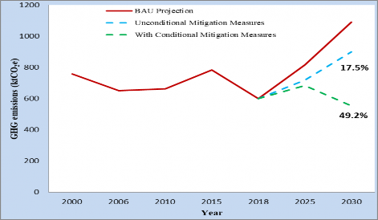
The emissions under the Business-As-Usual scenario in the Energy sector will increase from 599 ktCO2eq in 2018 to about 1090 ktCO2eq in 2030. The main mitigation actions above have a potential to reduce GHG emissions in this sector by 536 ktCO2eq (49.2percent) in 2030 as shown in Figure 3.
Agriculture
In 2018, the total Net GHG emission from this sub-sector was 2982 ktCO2eq and is expected to rise to 3691 ktCO2eq in 2030. GHG emission from this sector is essentially from the livestock sub-sector (enteric fermentation and manure management). Many mitigation studies have focused in this sector as livestock rearing significantly contributes to the national and household food security. The following issues form the basis for mitigating GHG emissions from agriculture.
Better livestock management system (i.e., better feed, animal health care and breeding), which supports high ruminant productivity and improved livelihoods and resilience of livestock producers.
Broader land management, such as improved pastures for grazing; improved soil and water management; reduced use of fire as a management strategy; and enhance soil fertility.
Promote the wider use of natural fertilizer initiated by the Ministry of Agriculture and Ministry of Marine Resources as it influences GHG emission reduction.
Apply improved technology to treat and reuse by-products and wastes in agriculture and livestock production; developing organic agriculture.
Mitigation co-benefit
The following projects which are labelled in the adaptation section have also mitigation co-benefits.
Improved organic fertilizer through the use of compost to avoid or reduce the use of chemical fertilizers. Organic farming helps productivity to increase by 50percent while it reduces the release of GHG from use of artificial fertilizer.
Establishment of beef cattle fattening farms and forage-based dairy cattle, sheep and poultry productions in order to reduce land degradation caused by overgrazing.
Hydroponic fodder production in 50 dairy farms, which will reduce overgrazing and land degradation.
Planting of around one million date palm trees in the country by the end of 2030 to restore more than 6,400 hectares of land and to sequester 28 ktCO2 annually.
In 2018, the net CO2 removal from this sector was estimated at 208 ktCO2 and this is expected to rise to 661.46 ktCO2 with the following potential projects.
Forest conservation offers large mitigation potential with low costs. Eritrea can implement policies such as designating protected areas and establishing land tenure for the local communities.
Strengthen forest monitoring and improved law enforcement to reduce deforestation from biomass consumption and crop cultivation;
Restore and expand the scope of forest targets and policies on mangroves as these are carbon rich forests and can store more carbon per area than upland forests.
Increase and strengthen reforestation and afforestation programs.
Develop agro-forestry models to enhance carbon stocks and conserve land.
Protect, conserve and sustainable use of forests and forest land to increase carbon sequestration and forest certification;
The projects mentioned below have mitigation co-benefits.
Afforestation program on 7,880 ha of land, in addition to around 456.5 ha of mangrove, which have been planted since 2018. This will reduce deforestation resulting in reduction of 93.13 ktCO2/year.
Forest conservation over 480,000ha of land to reduce deforestation and forest degradation resulting in reduction of 293.33 ktCO2/year.
An afforestation program over 771,220ha of land to restore forests that have been degraded because of human and climatic factors to enhance natural regeneration and restore indigenous trees and shrubs, eventually to make a forest. This leads to a reduction of 146.67 ktCO2/year.
Improved forest management on1, 251,220ha of land to introduce management practices for the improvement, growth and development of trees and shrubs outside forests. This may include practices like weeding and cultivation, water holding structures, maintenance and gap filling, monitoring and evaluation of growth and productivity. Improved forest management and agro- forestry reducing128.33 ktCO2/year.
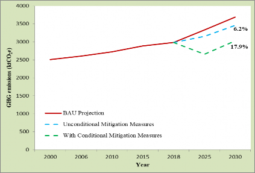
Targets for AFOLU Sector
Under BAU conditions, it is projected that AFOLU net emissions will reach 3691ktCO2eq in 2030, while with the implementation of all the main mitigation measures envisaged above, it is projected that the net emissions in this sector will be reduced by 17.9percent to 3029ktCO2eq in 2030. This is illustrated in figure 4.
In Eritrea, growth in urban populations and changing consumption pattern of residents has resulted in an increased volume of solid wastes. Municipal solid wastes constitute a serious health problem to the local community as illegal sites for dumping bring serious threats to environmental sanitation. Estimate shows that a total of 539.2 tons of municipal solid waste are generated from major towns of the country each day (MoLWE, 2007). Of the total amount of waste 52.5percent is collected and disposed at the dumping sites through municipalities of towns and cities. Organic waste accounts for huge amount of total waste generated from households, commercial and agricultural activities. Limitations in finance and technology, and limited awareness are the main constraints that force people to dump wastes using inappropriate means such as burning, burring and throwing in drains or open places along the streets. In addition, wastes collected through municipalities are poorly managed with no proper means for classification. As a result, the economic and environmental benefits that could have been generated from wastes are not realized. Absence of proper disposal mechanism also makes the level of methane gas emission difficult to estimate.
The result of aggregate GHG emission from waste sector in 2018 was 43ktCO2eq. This is expected to increase to 57 ktCO2eq in 2030.In Eritrea, majority of GHG emission in waste sector are from the solid waste disposal which are accounting for 97percent and the remaining 3percent was from open burning of waste. To control and reduce GHG emissions from this sector, adequate policies are needed and actions like promoting composting solid waste and avoiding open burning to reduce CH4 and CO2 emissions respectively. At present, there is only limited activity of recycling solid waste in general and that of plastic and organic wastes in particular. Table 4 presents projects to be implemented.
Table 4 : Summary of Mitigation Measures for the Waste Sector
|
Mitigation Measures |
Objective |
Duration |
Implementing Institutio n |
Funding Estimates USD |
Indicator |
||
|
18- 25 |
25- 30 |
Unconditional |
Conditional |
||||
|
Recycling of Plastics Recycling of MSW in big cities, for example recycling of plastic wastes |
|
MoL G, MTI and MoA |
5,000 |
Tons of MSW recycled |
|||
|
Composting of MSW Controlled aerobic composting of MSW, in hospitals, residential places, Hotels and even in farm lands |
|
MoL G/M oA |
15,000 |
100,000 |
Tons of MSW composted |
||
Waste water treatment in the capital city |
|
MoL G |
20,000,000 |
M3 of water treated and Rate of waste generation |
|||
Sub-total |
20,000 |
20,10 0,000 |
|||||
Grand total |
20,120,000 |
||||||
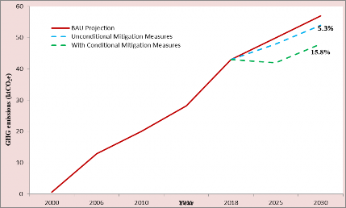
Under the BAU scenario, the waste sector emissions are projected to increase from 43 ktCO2eq in the base year to 57 ktCO2eq in 2030. If the commitment fully implemented, the main mitigation measures and policies are projected to reduce the 2030 emissions by 15.8percent to 48ktCO2eq. This is shown in the figure below.
In Eritrea, the total direct GHG emissions from this sector in 2018 was 185 ktCO2eq and because of the data limitation to project the BAU emission remained unchanged in 2030 out of which the majority of GHG emissions in this sector was from mineral production.
The strategic plan of the Ministry of Trade and Industry (MTI) aims to protect the environment and safety of its employees. This will be achieved by developing strategies and guidelines to protect the environment; striving for a healthy, accident-free workplace, providing information and assistance that allows people to develop its own environmental, health and safety policy, assisting employees in maintaining their health; and promote an upgraded, safe guarded environment that is free from pollution. The above strategic plans could be attained through:
Establishing environmental unit to follow, monitor and evaluate the environmental issue in the industrial sector;
Developing policies, regulation, standards, and guideline manuals on air pollution management.
Introducing energy efficient technology that is able to reduce environmental pollution.
Reducing clinker content and implementing other measures to reduce GHG emissions in cement production.
The Table 5 below presents projects that need to be addressed to accomplish the above objectives.
Mitigation Measures |
Objective |
Duration |
Implementing institution |
Funding Estimates USD |
Indicator |
||
18-25 |
25-30 |
Unconditional |
Conditional |
||||
clinker replacement |
|
|
MoTI |
3,000,000 |
4,00,000 |
Share of clinker in cement (percent) |
|
|
Energy efficiency in industry such as upgrading the lighting system by introducing renewable energy, efficient lamps. |
|
|
|
MoTI/MoEM and EEC |
1,000,000 |
2,000,000 |
Energy efficiency (MWh) |
Sub-total |
4,000,000 |
6,000,000 |
|||||
Grand total |
10,000,000 |
||||||
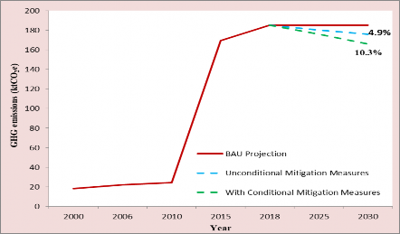
Under BAU scenario, the IPPU sector emissions are 185 ktCO2eq, which is remaining constant, due to data limitation, in 2030. Implementation of the main mitigation measure has the potential to reduce the emissions in this sector by 10.3percent to 166 ktCO2eq in 2030 as shown in the figure 6.
Since 2018 Eritrea has been implemented several projects for mitigating climate change which cost a total of USD 55,066,000. For an effective implementation of the Climate Resilient Economy Strategy, Eritrea requires a total estimated expenditure of more than USD 500,793,000 by 2030, of which USD 91,376,000is from domestic sources and USD 409,417,000 is conditional to availability of external sources. Thus, the types of contributions required to implement Eritrea’s NDC are categorized into unconditional and conditional contributions. Table 6 illustrates investments for projects planned for the period 2025-2030 for the two scenarios considered. In order to avoid double counting the budget for AFOLU (agriculture and forestry) is included in the adaptation component.
Table 6 : Investment requirements for mitigation during the period 2025-2030 of USDs
Sector |
Unconditional |
Conditional |
Total |
Energy |
87,356,000 |
383,317,000 |
470,673,000 |
IPPU |
4,000,000 |
6,000,000 |
10,000,000 |
AFOLU |
- |
- |
- |
Waste |
20,000 |
20,100,000 |
20,120,000 |
Total |
91,376,000 |
409,417,000 |
500,793,000 |
Parties to the UNFCCC are requested to implement MRV system that regularly quantifies national GHG emissions and removals. They are also expected to report about the NDC progress to track the target year. Thus, the successful implementation of Eritrea’s NDC requires an effective Measuring, Reporting and Verification (MRV) framework, enabling the country to monitor the effectiveness of its mitigation measures and facilitating access to the support required. In this regard, the updated NDC3.0 document attempts to provide detailed statement on the MRV and roles and responsibilities of the various stakeholders directly involved in the mitigation activities. It is expected that Eritrea, in line with the Paris Agreement, will enhance its efforts to reduce emissions and increase climate resilience.
Eritrea has proposed national climate MRV structure through consultations with all stakeholders during the preparation of TNC and BUR1. The proposed MRV structure consists of a supervisory body, represented by the MoLWE and line ministries. It is expected to be institutionalized after enhancing the capacity of the institutions through the Capacity Building Initiative for Transparency (CBIT) project, which will be completed in June 2026. In general, the existing institutional arrangement work relevant to MRV activities would be a solid foundation to evolve into a comprehensive national MRV system and tracking the NDC progress.
Like most other developing countries, Eritrea’s contribution towards GHG emissions is extremely low. Such low contribution is not expected to show significant change in the near future. As signatory to the climate change agreements and treaties, however, the country has the responsibility to avert the adverse impacts of climate changes mainly through adaptation measures. Field visits, review of documents and consultative meetings with stakeholders verified that the contribution from adaptation had been proved to be an effective means of tackling the negative impacts of climate change. At present, Eritrea is investing substantially to build resilience against climate change impacts with better ambitious adaptation and mitigation measures.
The sectors for adaptation contributions identified in the National Adaptation Program of Action (NAPA) and addressed through the First NDC of Eritrea are Agriculture, Forestry, Water resources, Marine resources and Public Health. As part of the development program, Eritrea continued to accomplish a lot of adaptation activities funded by the government and contribution from communities and development partners. A total of USD 76,533,477.70 was expended in accomplishing some of the adaptation contributions for the period 2018-2023 in the sectors of agriculture, forestry, marine resources, water resources and public health (Table 7).
Table 7 : Adaptation practices achieved in the period 2018-2024
Sector |
Priority projects |
Activities accomplished |
Cost (USD) |
Agriculture |
Degraded land rehabilitation |
Community based on situ soil and water conservation activities in all Zobas (83,974ha) |
23,512,720.0 |
|
Promotion of CSA |
Pilot project climate smart community |
500,000.0 |
|
|
Promotion of improved drought resistant seed verities (#14,074) |
2,345,666.7 |
||
Promotion of organic fertilizer |
1,500,000.0 |
||
Irrigation schemes |
Construction of water harvesting structures and irrigating downstream irrigable areas (39 different size dams ) |
19,500,000.0 |
|
Sub-Total |
47,358,386.7 |
||
Forestry |
Afforestation program |
20,143,186 tree seedlings from public fund |
3,284,820.8 |
|
|
7,880.0 Ha Area covered as com. contribution |
4,183,677.3 |
|
Sub-Total |
7,468,498.1 |
||
Water Resources |
Dams & ponds constructed |
40 small earth dams and 20 pounds were constructed in all the six Zobas |
13,333,333.3 |
Safe drinking water supply |
About 60 water supply projects have been constructed and the coverage has increased to 80.5 percent. |
800,000.0 |
|
Sub-Total |
14,133,333.3 |
||
|
Marine Resources |
Afforestation program |
456.5 hectare Mangrove plantation |
51,915.6 |
Sub-Total |
51,915.6 |
||
|
Public Health |
Malaria control |
Training of health workers and community health agents on malaria diagnosis, treatment and general malaria control. |
1,804,419.0 |
Conduct Various surveys/research |
141,608.0 |
||
|
Conduct vector control operations ((larval source management, insecticide spraying and bed-net distributions. |
4,599,202.0 |
||
|
Conduct Social and Behaviour Change (SBC) activities including seminars, demonstrations, sports competition, Radio/TV airing, drama production and develop IEC materials etc |
825,306.0 |
||
Entomological surveillance implemented |
150,809.0 |
||
Sub-Total |
7,521,344.0 |
||
Grand Total |
76,533,477.70 |
||
Eritrea is one of the most vulnerable countries in the world to the adverse effects of climate change due, mainly, to its location in the Sahelian region and its low adaptive capacity. Based on the 1900- 2018 data, rainfall amount showed reduction of 17percent to 30percent with variations in several ecological regions. Similarly, temperature data from 1960 showed significant increase in the average temperature of 1.85°C in the Eritrean plateau and a modest increase of minimum average temperature of about 1.64°C. However, a significant decrease of maximum average temperature of about 2.5°C was observed in the coastal areas of the country (TNC, 2021). Projections of the IPCC AR5 (Figures 7 and 8) shows changes in air temperature in Degree Celsius and precipitation in percent in Eritrea at different global warming levels compared to the reference period of 1986-2006, based on the RCP8.5 and RCP2.6 scenarios. Figure 9 shows the mean air temperature in Eritrea in 2050 under the RCP8.5 and RCP2.6 scenarios while Figure 10 shows spatial distribution of the projected change in precipitation (in percent) in Eritrea since the reference period 1986-2006, in the years 2050 and 2030 under a RCP8.5 scenarios.
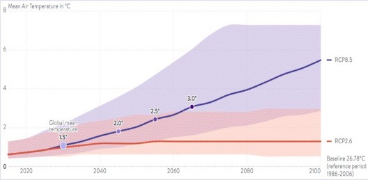
Figure 7: Projection of change in mean air temperature from 2020-2100
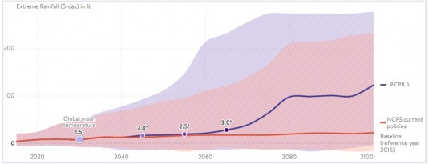
Figure 8: Projection of change in mean precipitation from 2020-2100
A large proportion of the Eritrean population is dependent on agriculture as the main source of income and food security. It accounts for about 43 percent of all employment (VNR, 2022). Such a huge dependency on a single sector makes the country's economy highly vulnerable to climate change. The impacts of climate change are seen in all economic sectors, but it is more evident on agriculture, forestry, water resources, marine resources, the health system and food security. Agriculture and people who rely on it for livelihood are the most vulnerable sectors. No significant change had been noticed from the previously identified groups in NAPA as well as in the first NDC. Based on the survey and stakeholder consultation, the level of vulnerability is orderly listed below from the highest to the least.
Subsistence Farmers
Pastoralists/nomads
Rural dwellers
Fishermen
Urban poor
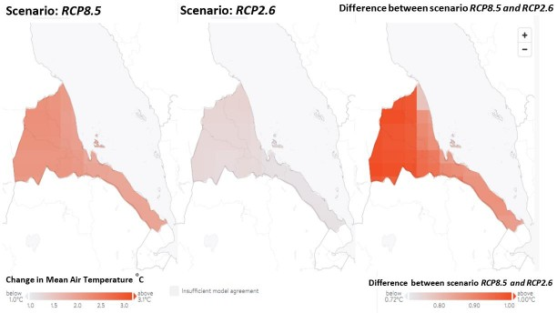
Figure 9: Mean Air Temperature in Eritrea in 2050 under RCP8.5scenario versus RCP2.6 scenario and the difference between the two scenarios.
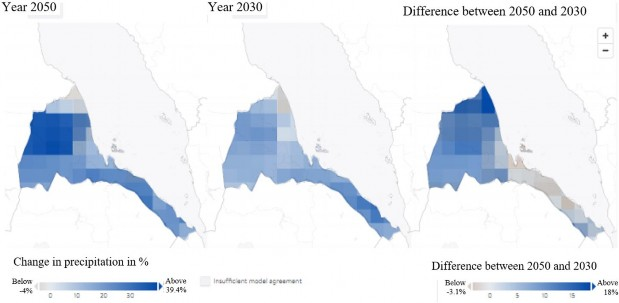
Figure 10: Spatial distribution of the projected change in precipitation in the years 2050 and 2030 and the difference between them.
Across the sectors and regions, the most vulnerable people and systems are observed to be disproportionately affected. Thus, within each of the groups listed above, women, children, elders and people living with disability are the most vulnerable. Therefore, cost effective adaptation services and appropriate use of natural resource management should be practiced in order to minimize the risks of climate change and disasters on these groups. Moreover, to join hands to the efforts being exerted by the international community in addressing the challenges the vulnerable groups are facing, Eritrea signed and ratified a number of international and regional agreements that enable them consider in the different adaptation projects or activities. Examples of these conventions include the United Nations Convention on the Elimination of All Forms of Discrimination against Women (CEDAW) and the Convention on the Rights of the Child (CRC).
Due to changes in climate, several types of natural hazards had significant impacts on livelihoods. In addition, vulnerability of communities has increased as agricultural productivity, food security and public health are threatened. These hazards include recurrent droughts, flooding and storms, high winds, desert locust swarms, and volcanic activity. In recent years there has been a large increase in the number of persons affected by disasters as shown in Figure 11 (VNR, 2022).
Activities related to economy, environment and public health are influenced by the availability and quality of water supply. The water sector in Eritrea is highly vulnerable to climate change. Over the last three decades, the country had faced three major drought events. With most of the country receiving less than 500mm of precipitation, having no permanent rivers (except one) and lakes, insufficient storage dams, render availability of fresh water for significant portion of the population limited.
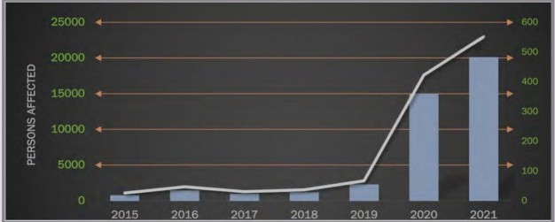
Figure 11: Number of people affected by disasters 2015-2021. The left side shows number of persons and the right side number of persons per 100,000 of population (Source: VNR 2022).
Among the various sectors, agriculture is the most vulnerable to the effects of climate change as it is highly dependent on the natural system. Drought, epidemic pests, diseases and parasitic weeds are the major threats that hamper crop and livestock production systems (TNC, 2021). The impact of climate change in agriculture is manifested by a change in rainfall pattern whereby the main rainy season starts late and finishes early together with prolonged drought leading to:
Reduction in annual flow of rivers and streams, which recharge the groundwater aquifers that supply irrigation water ,
Extinction of many local crop varieties,
Accelerated land degradation in which nationally 23 hot spot areas that cover 9.8percent of the total land area of the country were identified,
Appearance of new, unknown or uncommon crop pests, and
Massive death of livestock and extinction of endemic species among others.
Drought is a major risk that impacts the forestry sector. It mainly causes loss of vegetation, which, in turn, impacts the environment, soil and water conservation, crop and livestock production and productivity, loss of biodiversity and habitat, disturbance of wildlife, disturbance of the natural landscape etc.
The marine resources sector is highly vulnerable to climate change impacts, which affect both the marine and inland fishery and natural ecosystem. The main risks observed include, sea level rise, surface water temperature rise, soil instability and land slide along the coast, drought and water scarcity, strong rainfall and wind and acidification of sea and fresh water.
Recent data from the Health Management Information System (HMIS) and Integrated Diseases Surveillance and Response (IDSR) showed increasing trends of climate sensitive diseases particularly those associated with water. The main vector-borne diseases that are caused by changes in climate change are malaria, dengue fever, Schistosomiasis. Diarrhea and malnutrition, in particular, are likely to be worse due to climate change. Although, adaptation interventions on climate sensitive diseases such as schistosomiasis and malaria showed a declining trend, the spatial distribution of malaria is increasing.
Adaptation priorities were set in 2007 during preparation of the NAPA where experts representing various institutions took part. In 2018, slight update was made by experts who participated in preparation of the first NDC. At present, experts from each sector have provided updates of the sectoral priorities to be discussed and confirmed in a way to meet the adaptation investment plans and ambitions updated. Below are the priorities by sector.
Promoting effective soil and water conservation programs
Improvement of water use efficiency by introducing water saving irrigation systems like drip and sprinkler irrigation;
Constructing water reservoirs, dams, ponds etc.
Expanding irrigated agriculture, especially spate-irrigated agriculture for crop/livestock production;
Promoting good water resource management and efficiency through new regulations;
Controlling pests and plant diseases through regular weeding, crop rotation, and planting of appropriate crops;
Breed drought and disease-resistant high-yield crops to maintain and/or improve crop production levels.
Increase awareness, education and training for farmers
Increase efforts in reforestation, afforestation and catchment rehabilitation
Maintain the balance between fuel wood supply and demand;
Promote non-wood forest products specially production of gums and resins to substitute income from sales of fuel wood and charcoal;
Enhance forest protection and the establishment of enclosure and protected areas;
Introduce comprehensive rehabilitation and protection plans for forest areas to meet the fuel wood and fodder requirements of rural and urban communities and to reduce downstream siltation;
Promote wood energy substitutes such as solar, wind, kerosene, gas, electricity etc. while improving wood consumption efficiently using improved stoves;
Strengthen institutional and human capacity and infrastructural development;
Revise and amend laws, proclamations, policies and strategies where it is applicable;
Strengthen extension activities and public awareness campaigns including greening campaigns and community participation; and
Review and update existing forest and woodland management plans.
Enhancing soil and water conservation practices all over the country through constructing different terraces, check-dams, trees planting, etc.
Efficient utilization of water resources for irrigation including drip and sprinkler systems,
Enhancing the utilization of latest water technology such as solar powered pumping systems,
Construction of water storage structures such as surface and subsurface dams, ponds, diversion structures, check dam, etc. and developing groundwater well fields in the highly rechargeable aquifer systems of the country
Introduction of saline and brackish water desalinating technology along the coastal and island settlements
Rehabilitation of critical coastal and marine ecosystems
Supply of potable water through desalination to coastal and island fishery processing infrastructure;
Generation or at least use of climate information, building community capacities in early warning systems and disaster risk management and preparedness;
Promotion of fuel-efficient fishing vessels; and use of renewable energy in fish processing and drying kilns;
Provision of cold storage transport infrastructure i.e. refrigerated vans to small scale fisheries cooperatives, and insulated cooling boxes framed on bicycles to small scale entrepreneurs
Restocking of fingerlings in dams and reservoirs;
Address climate related communicable diseases and other poverty related diseases such as nutritional deficiencies, diarrheal diseases, acute respiratory infections, malaria and tuberculosis;
Ensure timely availability of good quality data to guide decision making as well as real- time data for rapid detection and response to public health threats
Ensure sustainable access to medicines, diagnostic equipment and medical commodities through sustainable financing and efficient procurement;
Implementation of the adaptation contribution targets requires mobilization of funds from domestic and international sources. The estimated cost of the adaptation up to the year 2030 across all the four sectors is USD 777,989,753.29 of which USD 376,562,287.23 (48.41percent) of the total adaptation cost is from domestic sources (unconditional source) and USD 401,427,466.06 (51.59percent) of the totals is conditional to external funding (Table 8). This indicates Eritrea is planning to allocate large domestic resource comparable to those expected from external source to adapt to climate change impacts. The major cost of the adaptation component is going towards the agriculture sector in which the percent of unconditional, conditional and total adaptation cost is 46.53percent, 46.14percent and 46.33percent, respectively. Adaptation cost in the public health sector is the least among the five sectors in which the percentage of conditional and total adaptation cost is 4.13percent and 2.13percent respectively (Table 8 and Figs. 12, 13, and 14). Details of planned adaptation programs and projects for the period 2025-2030 and their costs are shown in Table 8.
Table 8 : Implementation Cost of Adaptation for the Period 2025-2030
|
Sector |
Cost (USD) |
||
Unconditional |
Conditional |
Total |
|
Agriculture |
175,242,361.53 |
185,238,637.36 |
360,480,998.89 |
Forestry |
90,538,259.00 |
90,723,891.00 |
181,262,150.00 |
Water resources |
47,121,666.70 |
47,373,666.70 |
94,495,333.40 |
|
Marine resources |
63,660,000.00 |
61,493,000.00 |
125,153,000.00 |
|
Public Health |
|
16,598,271.00 |
16,598,271.00 |
Grand Total |
376,562,287.23 |
401,427,466.06 |
777,989,753.29 |
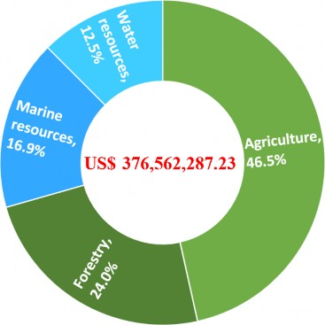
Figure 12 : Unconditional Adaptation Cost (USD) by Sector and Percent Contribution of Sectors.
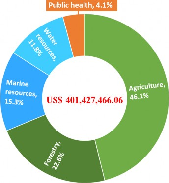
Figure 13 : Conditional Adaptation Cost (USD) by Sector and Percent Contribution of Sectors
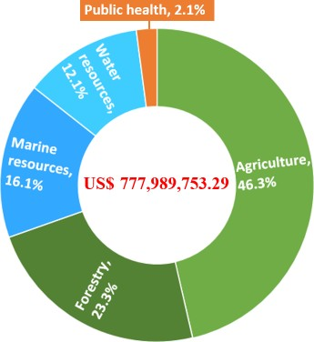
Figure 14 : Total Adaptation Cost (US$) by Sector and Percent Contribution of Sectors
Table 9 : Adaptation Activities Planned for the Period 2025-2030
Sector |
Program |
Un-conditional |
Conditional |
Total |
Indicator |
Agriculture |
Agricultural Land and Natural Resource Management Program |
90,586,546.20 |
41,303,313.36 |
131,889,859.56 |
|
Crop Development Program |
2,715,753.00 |
23,127,196.00 |
25,842,949.00 |
|
|
Livestock Development Program |
1,850,583.33 |
32,275,200.00 |
34,125,783.33 |
|
|
|
Integrated Livelihood and Agribusiness Support Program |
556,312.00 |
458,000.00 |
1,014,312.00 |
- Increase in proportion of farmers using livelihood improvement technologies. |
|
|
Human and Institutional Capacity Development Program |
7,370,167.00 |
40,518,831.00 |
47,888,998.00 |
- Level of improvement in human resource. |
|
|
Strengthening the capacity of Mai AdeKemom Farmers Association for Sustainable Fruit and Vegetable Production |
50,000.00 |
50,000.00 |
100,000.00 |
- Number of Beneficiary farmers |
|
|
Community Based Watershed Rehabilitation in Mibtak |
61,500.00 |
50,000.00 |
111,500.00 |
- Area of watershed rehabilitated |
|
|
Mended Community based spate Irrigation Development in Adi-Shuma Village |
61,500.00 |
50,000.00 |
111,500.00 |
- Area of land under spate irrigation |
|
|
Promoting Sustainable Land Management to Achieve Land Degradation Neutrality (LDN), Enhance Livelihoods, and Strengthens the Resilience of Farming Community in the Aylagundet Watershed, Debub region |
18,840,000.00 |
9,420,000.00 |
28,260,000.00 |
|
|
|
Mainstreaming climate risk considerations in food security and IWRM in Tsilima Plain and upper catchment area. |
27,500,000.00 |
11,550,000 |
39,050,000.00 |
|
|
|
Building Community Based Integrated and Climate Resilient Natural Resources Management and Enhancing Sustainable Livelihood in the South-Eastern Escarpments and Adjacent Coastal Areas of Eritrea |
25,650,000.00 |
26,436,097.00 |
52,086,097.00 |
||
Sub-total |
175,242,361.53 |
185,238,637.36 |
360,480,998.89 |
||
Forestry |
Tree seedlings |
15,130,327.00 |
9,650,422.00 |
24,780,749.00 |
- No of seedlings |
Forest restoration(125,011ha) |
19,881,870.00 |
13,695,547.00 |
33,577,417.00 |
- Area of land restored (ha) |
|
New enclosure areas (646,209 ha) |
9,693,135.00 |
22,617,315.00 |
32,310,450.00 |
- Area of land enclosed (ha) |
|
Forest conservation (480,000 ha) |
|
24,000,000.00 |
24,000,000.00 |
- Area of land conserved (ha) |
|
|
Restoring degraded forest landscapes and Promoting Community‐based, Sustainable and Integrated Natural Resource Management |
21,000,000.00 |
10,760,607 |
31,760,607.00 |
||
|
Ecosystem based Adaptation (EbA) and Restoration Degraded Accacia- Boswellia-Commephora Woodlands, in the Southern Gash-Barka Region. |
20,000,000.00 |
10,000,000.00 |
30,000,000.00 |
- ha |
|
|
Improved forest management and agroforestry (1,251,220 ha) |
4,832,927.00 |
4,832,927.00 |
- ha |
||
Sub-total |
90,538,259.00 |
90,723,891.00 |
181,262,150.00 |
- |
|
Water resources |
Rehabilitation of existing and establishment new hydrometeorological stations in representative areas of the country |
455,000.00 |
707,000.00 |
1,162,000.00 |
- No of stations rehabilitated or established |
Proportion of the community applying ICRNNRM and ESL.
Area of land rehabilitated
Number of Beneficiaries
Area of forest land restored (ha)
Number of beneficiaries
|
Dams & ponds constructed in prioritized areas of the country |
40,000,000.0 |
26,666,666.7 |
66,666,666.7 |
- No of dams & ponds |
|
|
Safe and adequate drinking water supply system infrastructures developed in rural settlements |
6,666,666.7 |
13,333,333.3 |
20,000,000.0 |
- No and type of infrastructure |
|
Wastewater treatment plant developed in Asmara area |
- |
6,666,666.7 |
6,666,666.7 |
- No of plants developed |
|
Sub-total |
47,121,666.70 |
47,373,666.70 |
94,495,333.40 |
- |
|
Marine resources |
Rehabilitation of Coastal Ecosystems and Livelihoods |
3,000,000.00 |
3,700,000.00 |
6,700,000.00 |
- Proportion of CoastalArea and livelihood rehabilitated. |
|
Rehabilitation of inland dam fisheries and livelihoods |
2,580,000.00 |
5,800,000.00 |
8,380,000.00 |
- No of damrehabilitated. |
|
|
Enhance fish Production, preservation and processing |
10,000,000.00 |
14,750,000.00 |
24,750,000.00 |
- Tons |
|
|
Enhance Distribution and marketing fish and fish products |
3,000,000.00 |
2,123,000.00 |
5,123,000.00 |
- Tons |
|
|
Sustainable utilization of krill milk fish and small pelagic fishto improve nutrition and livelihoods of Wekiro and Hirgigo |
30,000.00 |
70,000.00 |
100,000.00 |
- Households |
|
|
Community based Restoration and Rehabilitation of Mangrove Ecosystem in Zula, Foro Subzone |
50,000.00 |
50,000.00 |
100,000.00 |
- Number of ha rehabilitated |
|
|
Community Based Climate Resilient Marine and Coastal Ecosystem Restoration and Livelihood Enhancement. |
20,000,000.00 |
10,000,000.00 |
30,000,000.00 |
- Proportion of ecosystem restored and livelihood enhanced |
|
|
Establishing Eritrea’s National Multi-Hazard Early Warning System for climate Resilience and adaptation. |
25,000,000.00 |
25,000,000.00 |
50,000,000.00 |
|
|
Sub-total |
63,660,000.00 |
61,493,000.00 |
125,153,000.00 |
- |
|
Public Health |
Training of health workers and community health agents on malaria diagnosis, treatment and general malaria control. |
1,198,150 |
1,198,150 |
- Number of health workers and community health agents trained |
|
|
Provide health facilities with malaria diagnostic supplies and medicines |
|
599,057 |
599,057 |
- |
|
|
|
Control of micronutrient deficiencies |
|
393,248 |
393,248 |
- |
|
|
Tuberculosis Rapid Diagnostic Test (Cartilage) |
|
105,000 |
105,000 |
- |
Conduct surveys/research |
243,233.0 |
243,233.0 |
- Number of surveys conducted |
||
|
Conduct vector control operations ((larval source management, insecticide spraying and bed-net distributions. |
12,405,473.0 |
12,405,473.0 |
- Proportion of targeted population that received bed nets |
||
|
Conduct Social and Behaviour Change (SBC) activities including seminars, demonstrations, sports competition, Radio/TV airing, drama production IEC materials etc |
565,673.0 |
565,673.0 |
- Percent of population who know the causes of malaria & use bed net. |
||
|
Entomological surveillance implemented |
1,088,437.00 |
1,088,437.00 |
- Number of surveillances conducted |
||
Sub-total |
16,598,271.00 |
16,598,271.00 |
|||
Grand Total |
376,562,287.23 |
401,427,466.06 |
777,989,753.29 |
Human resource capacity: In Eritrea, availability of skilled human resources is a challenge faced in almost all economic and service sectors. Shortage in skills for the implementation of potential adaptation programs was confirmed during the field visits to the six administrative regions of the country.
Institutional Organization: The Department of Environment (DoE) is the focal point that coordinates climate change related activities in the country. DoE works in close consultation with the stakeholders. It may also hinder efficient monitoring and evaluation of the adaptation activities. In addition, data availability and flow to DoE is an issue that need to be addressed.
Climate data and information: The existing weather and climate data sources (e.g. rainfall, temperature and wind) are fragmented and inconsistent which poses a major challenge for long-term climate predictions. Therefore there is a dire need for the establishment of centralized and integrated national climatic and weather data and information management systems
Field visits to the different regions of the country showed almost all sectors have a reporting system that starts at village level and reach the headquarters through the regional offices of each sector. Most developmental projects also have their own monitoring and evaluation as well as reporting systems. However, there is no specific M&E and reporting system for adaptation components within the projects or developmental activities that allow smooth flow of information to the DoE that enable conducting proper monitoring and evaluation assessment. Regardless of that, the Department of Environment is doing its responsibility of monitoring and evaluation assessments through its continuous consultation with the stakeholders. Currently the Department is engaged in the “ Regional capacity building of COMESA member states in Eastern and Southern Africa for enhanced transparency in Climate Change Monitoring, Reporting and Verification as defined in the Paris Agreement’’. The project aims to strengthen capacity for Monitoring, Reporting and Verification (MRV) of climate actions, report on NDCs and knowledge dissemination.
In order to fully implement the mitigation and adaptation contributions contained in this NDC3.0, the provision of support by developed countries is crucial under the UNFCCC and its Paris Agreement. Eritrea requires finance, knowledge and skill, technology transfer support, and country driven policy process and institutional arrangements to implement actions plans contained in NDC3.0. The resources needed to implement mitigation and adaptation contributions are expected to be mobilized from various sources. In addition, implementation of emissions reductions in the period 2025-2030 needs longer term de-carbonization process, which mainly depends on availability of investments in infrastructure, technology development and capacity-building. This section provides an overview of these means of implementation.
As per article 9 of the Paris Agreement (PA), developed country parties shall provide financial resources to assist developing country parties in order to effectively address both mitigation and adaptation commitments in continuation of their existing obligations under the Convention. The financial resources required to implement mitigation and adaptation contributions is expected to be mobilized chiefly from the Government of the State of Eritrea, bi-lateral agencies and international organizations. Further, assessment of associated costs and required investment for implementing the updated NDC3.0 will continue to be elaborated and improved in the planning process for NDC3.0 implementation. In view of the present analysis, USD 1.3 billion is required in order to implement the adaptation and mitigation components, of which 36.59 percent is from domestic resources and 63.41percent is expected from external sources (Table 10).
Table 10 : Financial requirement for implementing the mitigation and adaptation components of the updated NDC
Component |
Unconditional |
Conditional |
Total |
Mitigation contribution |
91,376,000.00. |
409,417,000.00 |
500,793,000.00 |
Adaptation contribution |
376,562,287.23 |
401,427,466.06 |
777,989,753.29 |
Total |
467,938,287.23 |
810,844,466.06 |
1,278,782,753.29 |
The climate strategy presented in NDC3.0 has a robust portfolio of projects requiring conditional supports (International support for Finance, Technology Transfer and Capacity Building) of USD 810,844,466.06. This covers bigger portion of the total fund required to achieve 24.4% emission reduction target and build climate resilience. These projects offer significant share of direct co-benefits to children’s health, education, safety and future well-being, aligning with the needs of the most vulnerable groups.
Eritrea’s unconditional and conditional climate portfolio constitutes investment in health, education and safety of its children. Provision of adequate funding to clean energy, climate smart agriculture and resilience water resources and disaster risk control, can directly reduce child mortality, Morbidity, enhance girls school attendance and strengthen resilience to climate change. Projects that are directly aligned to address children needs are listed in the table below.
Project |
Benefit to children |
International Support in Million USD |
Solar PVs, Large Grid and Mini- Grids, Solar House Hold PVs and Solar LED Lamps |
Provide reliable lightening for studying and improving educational outcome Reducing respiratory illness from indoor pollution. . |
124.46 |
Efficient Stove (Adhanet), LPG Stoves and Biogas at rural farms |
Reduces exposure to harmful smoke and preventing respiratory infections in children Frees up times for children especially girls to attend schools and study time by reducing time for collection of fuel woods. |
39.3 |
Crop development program, Livestock development Program and Compositing of MSW |
Increases availability and diversity of nutritious food and combating children malnutrition, reduce poverty induced vulnerabilities and reduce exposure to chemical pesticides. |
60.27 |
Safe Drinking Water Supply Systems |
Prevent waterborne diseases like diarrhea and reduces the time burden of water collection and increasing school attendance. |
86.67 |
Forest restoration, Mangrove rehabilitation and new closure areas |
Disaster risk reduction, food security and clean air and water for children. |
88.39 |
Malaria Control Program |
Reduces children mortality and morbidity by Malaria and consistent school attendance |
16.6 |
Total |
415.69 |
|
Technology and know-how are vital components, which play significant role in the implementation of NDC3.0 action plans and strategies. They are catalyst for implementing the various measures to deliver the nationally determined contribution. Eritrea will continue to promote rapid technology deployment and support the transfer of suitable emerging technologies to meet its needs. The PA in Article 10 provides enhanced action on technology development, and the transfer will promote and facilitate the implementation of NDCs. It also ensures the deployment of appropriate technology support required for the implementation of their climate action, including NDCs. The technology needs assessment (TNA) is the starting point for identifying the requirements for new technology. Some of the technology transfer support needs are listed in Table-11.
Survey conducted showed that the introduction and dissemination of new technology has a tremendous impact in tackling problems related to climate changes. For example, the introduction of solar PV system and wind turbine for power generation, solar-powered water pumping system, energy efficient lighting and cooking stoves, updated lab and surveying equipment, introduction of new devices for measuring air quality and moving from chemical fertilizer to bio-fertilizer have substantially contributed towards alleviating the problems of GHG emissions. Similarly, the shift in water supply facilities from hand-pump to solar-powered pumping technologies has resulted in positive impacts in reducing running cost and increase productivity.
Sector |
Technology Transfer Needs |
Agriculture |
|
Energy |
|
Marine |
|
Water |
|
Forestry |
|
Transport |
|
Health |
|
In Article 11 of the Paris Agreement, the role of capacity building for developing countries aims to enhance the ability developing country parties to implement adaptation and mitigation actions. In view of this, Eritrea received various types of capacity building support to develop its national climate related reports especially in GHG inventory, mitigation actions and effects including institutional arrangement. Support related to capacity building was carried out through online and in-person (in country) training. The type of in-country training for most part comprises seminars and workshops that are carried out for few days. Survey showed that these short-term training have tremendous impacts on the reporting capability of the employees working for various institutions. For the Ministry of Agriculture, for example, enhanced human capacity has created enabling environment to combat drought and desertification as well as maintaining biodiversity. Members of the Ministry of Land, Water and Environment has excelled themselves in undertaking GHG inventory and making an in- depth analysis of the GHG emission and mitigation Scenarios. Likewise, overseas trainings have substantial effects on the employees by way of expanding exposure, knowledge and skills. Most institutions have put short-term and mid-term plans for upgrading human capacity. Overall, the country's human capacity and institutional set up is in fairly good shape, though there is a strong felt need for more effort to enhance capacity.
Table 13 : Human Capacity Needs for NDC Selected Sectors
Sector |
Human Capacity Needs |
Agriculture |
|
Energy |
|
Marine |
|
Water |
|
Forestry |
|
Health |
|
Transport |
|
NDC3.0 is a crucial policy document for achieving national and global climate goals, but their success is based on effective engagement with local communities. This is because local people are the ones most affected by climate changes, yet often lack the chance to participate in planning and decision making. Eritrea launched community-based soil and water conservation and tree planting programs since 1994, which has fostered a sense of ownership and commitment to climate actions. Such direct community involvement in the mitigation and adaption programs had also enabled them acquaint with the dangers associated with climate changes and learn how to cope with such changes. Moreover, climate changes disproportionately affect persons with disabilities who often face risks during extreme weather events. NDCs are crucial to address the needs of such people as these create effective and sustainable climate strategies. At present, war disabled veterans of Eritrea are engaged in climate actions through planting trees and creating environmentally friendly practices through the use of biogas.
The Government of the State of Eritrea has declared greening campaign as part of its efforts to help communities participate in the soil and water conservation activities. Greening campaigns are environmental organizations that focus on tree planting, gardening and other conservation efforts and cleaning. School communities are also engaged in similar activities and they play significant roles in raising awareness among students and the wider community contributing towards the country's greening efforts. They also serve as knowledge multipliers often becoming advocates for environmental protection.
The NDC outlines the process to support countries to mainstream gender equality into climate actions and lays the foundation for the development and implementation of gender-responsive NDC. Gender mainstreaming requires both integrating a gender perspective to the content of different policies and addressing the issue of representation of women and men in the given policy area. Today, effort is underway in Eritrea to promote gender equality in sustainable agricultural development by tackling climate changes. Aiming at helping rural women ameliorate the adverse impacts of climate change on their livelihoods, local administrations are playing a leading role in executing energy-saving traditional oven in many parts of the country. These ovens are in country designed and a tremendous effort has been made in making them available to households in the countryside. One can see the practical benefit gained from this project in terms of affordability of energy for cooking, improvement of health status linked to eyes and respiratory system, and saving bulk quantity of biomass. Women and their families are prime beneficiaries of from such development intervention. The National Union of Eritrean Youth and Students (NUEYS) also play important roles in environmental rehabilitation, which
is a vital role in implementing the NDC goals. Moreover Small grant program projects have been fully executed by the National Union of Eritrean Women (NUEW). In addition, the student campaign for development program had been carried out since 1994 with the aim of reclaiming degraded lands, and reforestation. To date, a total of 555,620 students have participated in the campaign, female accounting for 35percent (MoE 2024).
Mitigation and adaption measures are subject to continuous research and development. For that, periodic monitoring and evaluation to be compared with baseline data is recommended. This is because time series climatic data help to monitor changes over time. Such practice can be effectively carried out through research and development efforts and the result would enable to effectively quantify relevant interventions at the right time. For that, there is need for mainstreaming of climate change issues into the national development plans. There is also a dire need for an exchange of information on a timely basis. Such data is required for all geographical areas covered in all sectors of the economy. Moreover, mitigation activities require active and proactive participation of the public. As it stands, there is low public awareness regarding the risks involved in climate change in general and the links between climate change and the energy, AFOLU, IPPU and waste sectors. Therefore, public awareness should be promoted in collaboration with the mass media and the press on the importance of renewable energy (wind, solar and geothermal) in general and energy efficiency uses from the view point of human welfare and costs.
GACMO 2015. Greenhouse Gas Abatement Cost Model. A model developed by Joergen Fenhann, UNEP-DTU Partnership
MOA (2017) Eritrea LDN TSP country report
Girmay, M. 2021. The Mineral Potential and Mining Activities in Eritrea . Space systems, Japanese International Cooperation Agency (JICA), Japan
IPCC 2006. Guidelines for National Greenhouse Gas Inventories Prepared by the National Greenhouse Gas Inventories Programme , Eggleston H.S., Buendia L., Miwa K., Ngara T., and Tanabe K. (eds); Published by IGES, Japan.
IPCC, 2019: Summary for Policymakers. In: IPCC Special Report on the Ocean and Cryosphere in a Changing Climate [H.-O. Pörtner, D.C. Roberts, V. Masson-Delmotte, P. Zhai, M. Tignor, E. Poloczanska, K. Mintenbeck, A. Alegría, M. Nicolai, A. Okem, J. Petzold, B. Rama, N.M. Weyer (eds.)]. In press. )
IWRMP. 2009. Integrated Water Resources Management Plan , Department of Water, Asmara
MoA. 2024. Base line socio economic survey in support of Agriculture and Food security in all zobas of Eritrea . Ministry of Agriculture, Asmara, Eritrea
MoE. 2024. Report on Student Campaign for Development , Ministry of Education, Asmara, Eritrea.
MoLWE. 2001. Eritrea’s First National Communications , Ministry of Land, Water and Environment, Department of Environment, Asmara, Eritrea.
MoLWE. 2007. National Adaptation Programme of Action (NAPA).. Department of Environment, MoLWE, Asmara, State of Eritrea
MoLWE, 2009. Integrated Water Resource Management , Asmara, Department of Water resources Development. Asmara, Eritrea.
MoLWE. 2021. Climate Change Vulnerability, Impacts and Adaptation Options. Eritrea’s Third National Communications, Ministry of Land, Water and Environment, Department of Environment, Asmara, Eritrea.
MoLWE. 2007. National Adaptation Programme of Action (NAPA).. Department of Environment, MoLWE, Asmara, State of Eritrea.
MoLWE. 2021. Eritrea’s First Biennial Update Report. Ministry of Land, Water and Environment, Department of Environment, Asmara, Eritrea.
MoMR, 2018. Fish Inspection Quality Control Division Report , Asmara, Eritrea
MoFND (2024). National Development Planning Framework . Ministry of Finance and National Development, Asmara, Eritrea.
NBSAP (2024). Updated National Biodiversity Strategic Plan of Action. National Higher Education
and Research Institute (NHERI), Asmara, Eritrea
Ministry of National Development. 2004. Interim Poverty Reduction Strategy Paper (I- PRSP ), Asmara, Eritrea
Ministry of Finance and National Development. 2022. Eritrea Voluntary National Review of Progress towards the Sustainable Development Goals (VNR) , Asmara, Eritrea
Ministry of Finance and National Development. 2024. Eritrea Second Voluntary National Review of Progress towards the Sustainable Development Goals) , Asmara, Eritrea
Ministry of Education. 2004. National Gender Plan of Action (2003-2008), Ministry of Education, the Government of the State of Eritrea, Asmara
NDC. 2018. Nationally Determined Contributions Report to the United Nations Framework Convention on Climate Change (UNFCCC). Under the Paris Agreement (PA), Asmara, Eritrea
Tekie, A. 2019. National Circumstances for the Health Sector , the State of Eritrea, Ministry of Health, Asmara, Eritrea.
Teklehaimanot, B. Hagos, Z. Tesfamariam A. Mahta G. and Awet Y. (2022). Report of Mass Fish Mortality along the Eritrean Coast and Islands. Acta Entomology and Zoology 2022; 3(2): 36-39.
Water Resource Department. WRD 2007. Water Balance Frame Work for Analysis and Planning In Eritrea , Asmara, Eritrea.
Woldetnsae, T. Berhane, K and Ogbaghebriel, B. 2020. The Transition from Pastoralism to Sedentary Agriculture in Felket , Asmara, Eritrea
Guidance in decision 4/CMA.1 |
ICTU guidance as applicable to Eritrea's NDC |
|
1. Quantifiable information on the reference point (including, as appropriate, a base year) |
|
|
a. Reference year(s), base year(s), reference period(s) or other starting point(s) |
Base year for emission projections: 2018 Reference year for BAU emissions target: 2030 |
|
b. Quantifiable information on the reference indicators, their values in the reference year(s),base year(s), reference period(s) or other starting point(s), and, as applicable, in the target year |
In the base year, the emissions were 3810 ktCO2e. Under Business-as-usual conditions the country’s GHG emissions are projected to increase to 5023ktCO2e by 2030. |
|
c. For strategies, plans and actions referred to in Article 4, paragraph 6, of the Paris Agreement, or polices and measures as components of Nationally Determined Contributions where paragraph 1(b) above is not applicable, Parties to provide other relevant information. |
The strategies, plans and actions are based on the national context/circumstance described in section 2 and are reflecting our circumstance. |
|
d. Target relative to the reference indicator, expressed numerically, for example in percentage or amount of reduction |
24.4 percent reduction in GHG emission compared to 2030 BAU (baseline) scenario levels, |
e. Information on sources of data used in quantifying the reference point(s) |
Modeling the projections (BAU and target reductions) was based on an economy wider integrated assessment model. Eritrea’s GHG inventories Data from sector ministries and relevant agencies Economic projections from national and international data sources. Population projections from SOE. |
|
f. Information on the circumstances under which the Party may update the values of the reference indicators |
The national total GHG emissions for 2018 may be updated in line with methodological improvements arise. |
2. Timeframes and/or periods for implementation |
|
|
a. Time frame and/or period for implementation, including start and end date, consistent with any further relevant decision adopted by the Conference of the Parties serving as the meeting of the Parties to the Paris Agreement (CMA) |
2025-2030 |
|
b. Whether it is a single-year or multi-year target, as applicable |
Single year target, in 2030. |
3. Scope and coverage |
|
a. General description of the target |
The combined mitigation target (unconditional and conditional elements) corresponds to a reduction of 24.4percent compared to the BAU projection by 2030.The unconditional component foresees emission reductions of 8.6percent and the conditional component contributes to approximately 15.8percent compared to the BAU projection by 2030. |
|
b. Sectors, gases, categories and pools covered by the Nationally Determined Contribution, including, as applicable, consistent with Intergovernmental Panel on Climate Change(IPCC) guidelines |
The key sectors covered by this NDC are: Energy, AFOLU, IPPU and waste. Greenhouse Gases included are: Carbon dioxide (CO2,), methane (CH4), and nitrous oxide (N2O). |
|
c. How the Party has taken into consideration paragraph 31(c) and (d) of decision 1/CP.21 Para. 31(c) “Parties strive to include all categories of anthropogenic emissions or removals in their Nationally Determined Contributions and, once a source, sink or activity is included, continue to include it” Para. 31(d) “Parties shall provide an explanation of why any categories of anthropogenic emissions or removals are excluded” |
All major sources of GHG emissions in the GHG inventory have already been covered in this NDC update. Since Eritrea is an LDC, remaining gaps result from lack of reliable data. |
|
d. Mitigation co-benefits resulting from Parties’ adaptation actions and/or economic diversification plans, including description of specific projects, measures and initiatives of Parties’ adaptation actions and/or economic diversification plans. |
The mitigation co-benefits of the adaptation actions will be included in the mitigation contribution of this NDC. Some of the adaptation actions with the greatest mitigation co-benefit potential includes the following: Afforestation program ( 7,880 ha ) Forest Conservation ( 480,000 ha ) Forest Restoration. It is an afforestation program. ( 125,011 ha ) Improved management (1,251,220 ha) Introduce Management practices for the improvement, growth and development of trees and shrubs outside forests. Improved Organic fertilizer/Compost preparation. To plant around one million date palm trees in the country by the end of 2030 |
4. Planning Process |
|
|
a. Information on the planning processes that the Party undertook to prepare its Nationally Determined Contribution and, if available, on the Party’s implementation plans, including: |
|
|
i. Domestic institutional arrangements, public participation and engagement with local communities and indigenous peoples, in a gender-responsive manner |
Covered in section 2 |
ii. Contextual matters, including, inter alia, as appropriate |
|
|
a. National circumstances, such as geography, climate, economy, sustainable development and poverty eradication |
Covered in section 2 |
|
b. Best practices and experience related to the preparation of the Nationally Determined Contribution |
The updated NDC considers some of the best practices adopted by the current NDC. |
c. Other contextual aspirations and priorities acknowledged when joining the Paris Agreement |
Just transition: Eritrea has an extensive consultation process for social protection and institutionalized review by stakeholders, this serves, among others, to ensure all stakeholder interests are considered in all climate action. Food Security: response to climate change should safeguard the citizens’ basic rights to food. All of Society approach: in tackling climate change and its impacts involves engagement of all sectors- government and non- government players that include civil society actors, private sector, academia, media, development partners and the citizens. Gender Equality: Eritrea has various laws to promote gender equality and provide for the protection against discrimination on the basis of gender, with equal opportunities in education, work, and in cultural and professional development. The country foresees to achieve a middle- income status that comes along with improvements in socioeconomic welfare for all Eritreans. |
|
d. Specific information applicable to Parties, including regional economic integration organizations and their member States, that have reached an agreement to act jointly under Article 4, paragraph 2, of the Paris Agreement, including the Parties that agreed to act jointly and the terms of the agreement, in accordance with Article 4,paragraphs 16–18, of the Paris Agreement |
Not applicable. |
e. How the Party’s preparation of its Nationally Determined Contribution has been informed by the outcomes of the global stock take, in accordance with Article 4,paragraph 9, of the Paris Agreement |
In accordance to article 4/9, Eritrea is committed to submit its NDC every five years. |
|
f. Each Party with a Nationally Determined Contribution under Article 4 of the Paris Agreement that consists of adaptation action and/or economic diversification plans resulting in mitigation co- benefits consistent with Article 4, paragraph 7, of the Paris Agreement to submit information on the following: |
|
|
i. How the economic and social consequences of response measures have been considered in developing the NDC |
Eritrea’s NDC consists of adaptation actions. The economic and social consequences of the adaptation measures were analyzed in the NAPA and also in the adaptation section of the NDC. |
|
ii. Specific projects, measures and activities to be implemented to contribute to mitigation co- benefits, including information on adaptation plans that also yield mitigation co-benefits, which may cover, but are not limited to, key sectors, such as energy, water, coastal resources, human settlements and urban planning, agriculture and forestry; and economic diversification actions, which may cover sectors such as manufacturing and industry, energy and mining, transport and communication, construction, tourism, real estate, agriculture, fisheries. |
Projects, measures and activities have been identified and are contained in the updated NDC Implementation Plan. |
|
5. Assumptions and methodological approaches, including those for estimating and accounting for anthropogenic greenhouse gas emissions and, as appropriate, removals |
|
|
a. Assumptions and methodological approaches used for accounting for anthropogenic greenhouse gas emissions and removals corresponding to the Party’s nationally determined contribution, consistent with decision1/CP.21, paragraph 31, and accounting guidance adopted by the CMA; |
The “2006 IPCC Guidelines for National Greenhouse Gas Inventories” was used in compiling the 2018 base year GHG inventory as well as the assumptions used in the first Biennial Update Report 2021. |
|
b. Assumptions and methodological approaches used for accounting for the implementation of policies and measures or strategies in the Nationally Determined Contribution |
Not applicable since implementation of policies and measures is yet to commence Population growth, GDP….. |
|
c. If applicable, information on how the Party will take into account existing methods and |
See below 5. (d) Various sections of the NDC have been thoroughly revised for any duplication |
|
guidance under the Convention to account for anthropogenic emissions and removals, in accordance with Article4, paragraph 14, of the Paris Agreement |
|
|
d. IPCC methodologies and metrics used for estimating anthropogenic greenhouse gas emissions and removals |
The NDC update was informed by the use of Global Warming Potential (GWP) of Greenhouse gases for 100 years, which was used for the 2018 national GHG inventory and the First Biennial Update Report 2021. Calculation of emissions from some categories was based from the 2006 Intergovernmental Panel on Climate Change (IPCC) Guidelines for National Greenhouse Gas Inventories. |
|
e. Sector, category or activity-specific assumptions, methodologies and approaches consistent with IPCC guidance, as appropriate, including, as applicable |
|
|
i. Approach to addressing emissions and subsequent removals from natural disturbances on managed lands; |
Emissions and removals were approached in accordance with the Good Practice Guidance for Land use, Land-Use Change and Forestry. Not applicable. |
|
ii. Approach used to account for emissions and removals from harvested wood products; |
Not included in the emissions calculations |
|
iii. Approach used to address the effects of age-class structure in forests; |
Not Applicable |
|
f. Other assumptions and methodological approaches used for understanding the Nationally Determined Contribution and, if applicable, estimating corresponding emissions and removals, including |
|
|
i. How the reference indicators, baseline(s)and/or reference level(s), including, where applicable, sector-, category- or activity-specific reference levels, are constructed, including, for example, key parameters, assumptions, definitions, methodologies, data sources and models used |
Not applicable – Eritrea does not have a reference indicator. |
|
ii. For Parties with Nationally Determined Contributions that contain non-greenhouse-gas components, information on assumptions and methodological approaches used in relation to those components, as applicable |
Not applicable – Eritrea does not include non- GHG components in its NDC mitigation target. |
|
iii. For climate forcers included in Nationally Determined Contributions not covered by IPCC guidelines, information on how the climate forcers are estimated |
Not applicable – Eritrea does not include black carbon, since it is not a substance controlled by the UNFCCC or Paris Agreement. |
iv. Further technical information, as necessary |
Not applicable. |
|
g. The intention to use voluntary cooperation under Article 6 of the Paris Agreement, if applicable |
Eritrea will use voluntary cooperation provided for in Article 6 in accordance with the National Climate Change Act 2021 to demonstrate her mitigation and adaptation ambition and mobilize support to promote sustainable development. |
|
6. How the Party considers that its Nationally Determined Contribution is fair and ambitious in the light of its national circumstances |
|
|
a. How the Party considers that its Nationally Determined Contribution is fair and ambitious in the light of its national circumstances |
Eritrea is a developing country, with diverse economic development challenges compounded by climate change impacts. Eritrea strongly believes that current GHG emissions as well as the capabilities to mitigate them are key considerations in determining fairness and ambition. Even though Eritrea has been responsible for only 0.03percent of global emissions, the country is highly vulnerable to climate impacts that threaten its sustainable development. Despite these challenges Eritrea has set an ambitious target for reducing its emissions, with a significant unconditional contribution. |
b. Fairness considerations, including reflecting on equity |
Contributions and actions from Eritrea reflect the countries capability in terms of implementing the goal set for emission reduction under different scenarios. In view of this, Eritrea’s proposal meets fair share, which forms part of the global effort. |
|
c. How the Party has addressed Article 4, paragraph 3, of the Paris Agreement (Article 4.3 states that “Each Party's successive nationally determined contribution will represent a progression beyond the Party's then current nationally determined contribution and reflect its highest possible ambition, reflecting its common but differentiated responsibilities and respective capabilities, in the light of different national circumstances.”) |
In this updated NDC the reduction for both conditional and unconditional mitigation scenarios is 24.4percent which is less than the current NDC. This is because we were over ambitious at that time, now with reliable data the reduction is less than the previous. |
|
d. How the Party has addressed Article 4,paragraph 4, of the Paris Agreement (Article 4.4 states that “Developed country Parties should continue taking the lead by undertaking economy-wide absolute emission reduction targets. Developing country Parties should continue enhancing their mitigation efforts, and are encouraged to move over time towards economy-wide emission reduction or limitation targets in the light of different national circumstances.”) |
Not Applicable |
|
e. How the Party has addressed Article 4, paragraph6, of the Paris Agreement (Article 4.6 states that “The least developed countries and small island developing States may prepare and communicate strategies, plans and actions for low greenhouse gas emissions development reflecting their special circumstances.””) |
Many projects are under implementation that have direct and indirect impact in the GHG emission reductions and are included in this document. |
|
7. How the Nationally Determined Contribution contributes towards achieving the objective of the Convention as set out in its Article 2 |
|
|
a. How the Nationally Determined Contribution contributes towards achieving the objective of the Convention as set out in its article 2 (Article 2 of the UNFCCC states that “The ultimate objective of this Convention and any related legal instruments that the Conference of the Parties may adopt is to achieve, in accordance with the relevant provisions of the Convention, stabilization of greenhouse gas concentrations in the atmosphere at a level that would prevent dangerous anthropogenic interference with the climate system. Such a level should be achieved within a time frame sufficient to allow ecosystems to adapt naturally to climate change, to ensure that food production is not threatened and to enable economic development to proceed in a sustainable manner.”) |
The updated NDC reflects Eritrea’s contribution as highlighted above, towards achievement of the objective of stabilization of greenhouse gas concentrations in the atmosphere and defines priority adaptation and mitigation actions. |
|
b. How the nationally determined contribution contributes towards Article 2, paragraph 1(a), and Article 4, paragraph 1, of the Paris Agreement. |
The updated NDC defines the country’s contribution highlighted in form of priority adaptation and mitigation actions towards limiting increase to 1.5°C Addressed in 6a. |
SN |
Full Name |
Contact Information |
Role |
Organization |
1 |
Mr. Kibrom Asmerom |
kibromaw@gmail.com Tele:002917154731 |
Project Supervisor |
Ministry of Land, Water and Environment |
2 |
Dr. Woldetnsae Tewolde |
wolde1956@gmail.com Tel:002917195457 |
Lead Consultant |
Adi Keih College of Business and Social Science, Department of Geography |
3 |
Dr. Brhan Khiar |
brhankhiar200220@gmail.com Tel: 002917117725 |
Consultant |
Hamelmalo Agricultural College, Department of Horticulture |
4 |
Mr. Ezra Russom |
Consultant |
Mainefhi College of Science Department of Chemistry |
|
5 |
Mr. Teame Tekleab |
teametek2016@gmail.com Tele: 002917266389 |
Quality Assurance |
Ministry of Land, Water and Environment |
6 |
Mr. Michaele Berhane |
Technical Working Group |
Ministry of Agriculture |
|
7 |
Mr. Tesfay Gebrehiwet |
Technical Working Group |
Ministry of Mines and Energy |
|
8 |
Mr. Mussie Robel |
Technical Working Group |
Forest and Wildlife Authority |
|
9 |
Mr. Michele Hailegergis |
00291-7348631 |
Technical Working Group |
Ministry of Local Government |
10 |
Mr. Berhane Kidane |
Technical Working Group |
Ministry of Trade and Industry |
|
11 |
Mr. Semere Berhe |
Technical Working Group |
Ministry of Land, Water and Environment |
|
12 |
Mr. Tesfamariam Arefe |
Technical Working Group |
Ministry of Marine Resources |
|
13 |
Mr. Tesfamariam Weldegebriel |
Technical Working Group |
Ministry of Transport and Communication |